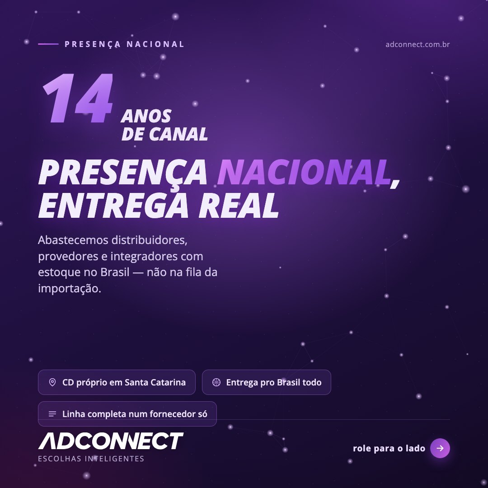
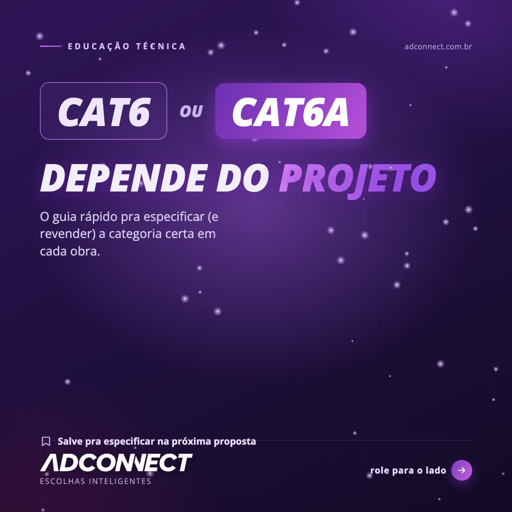
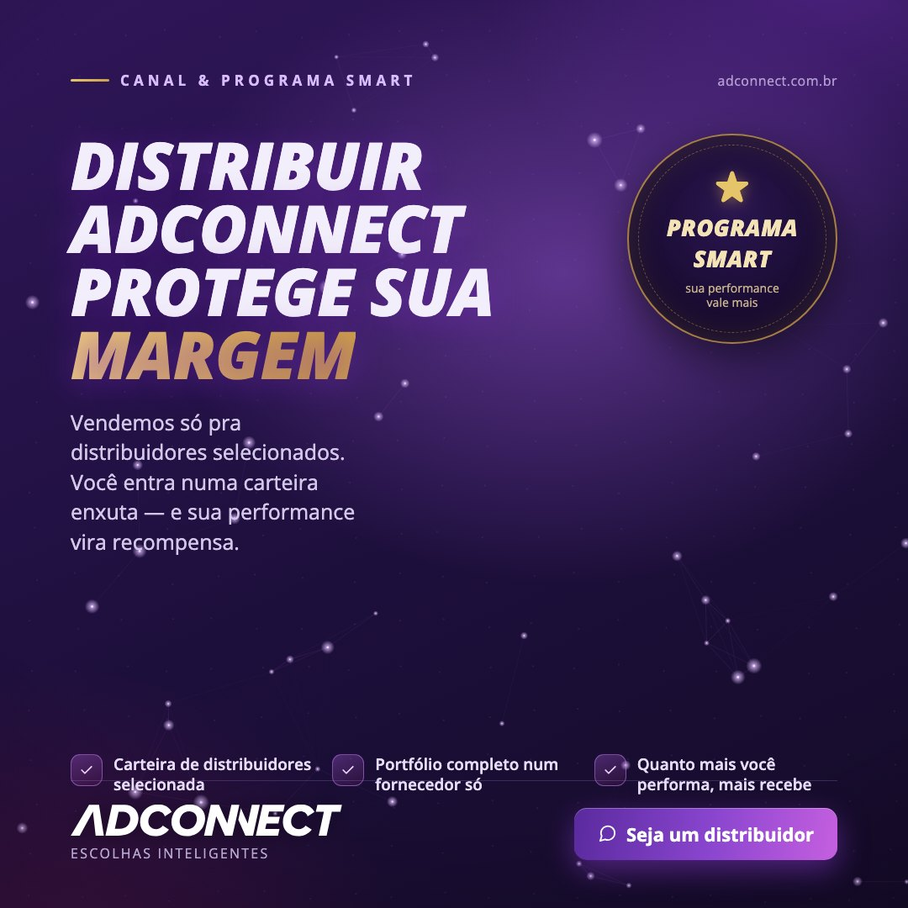
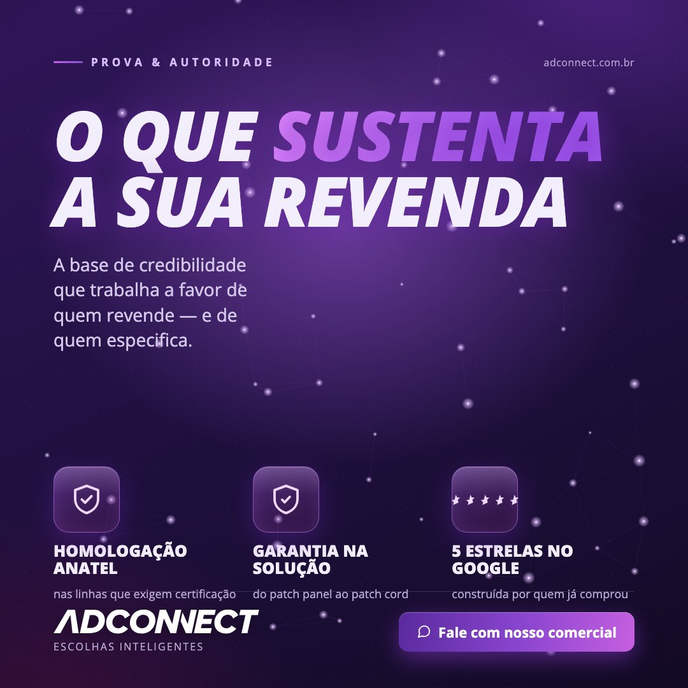
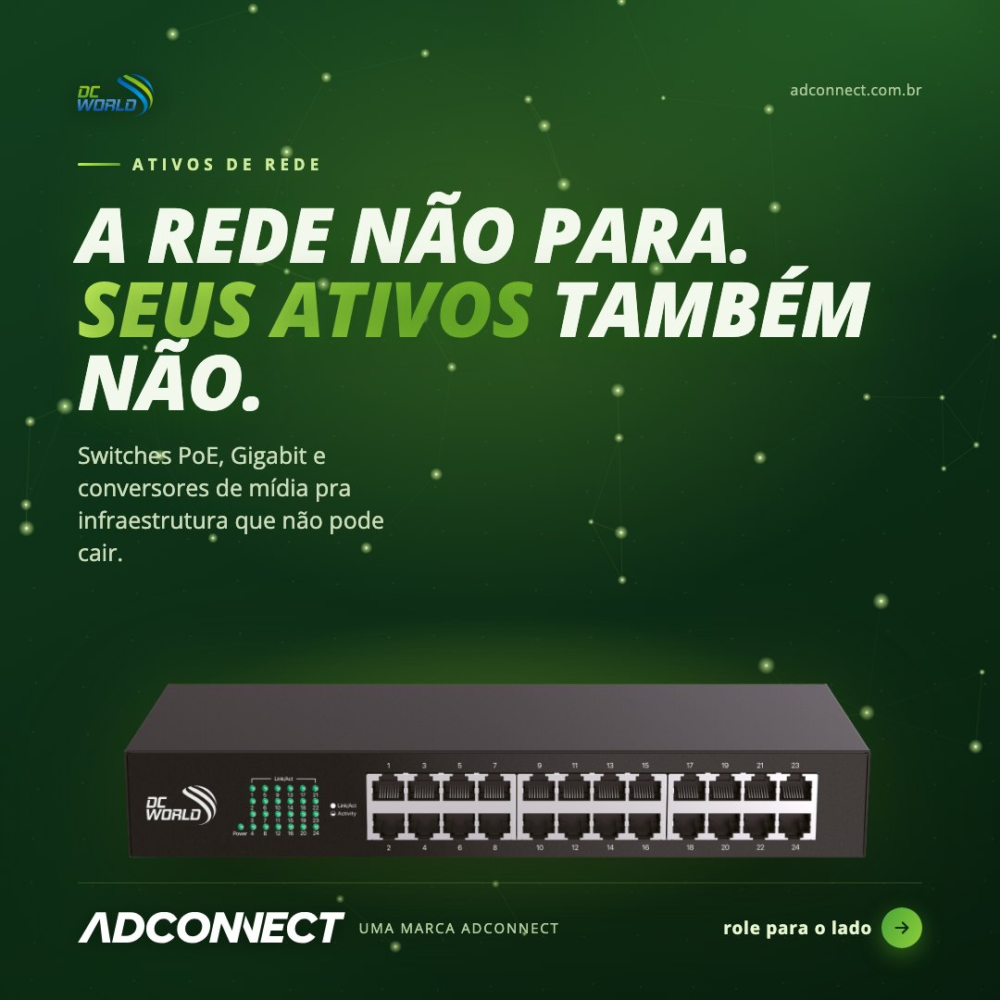
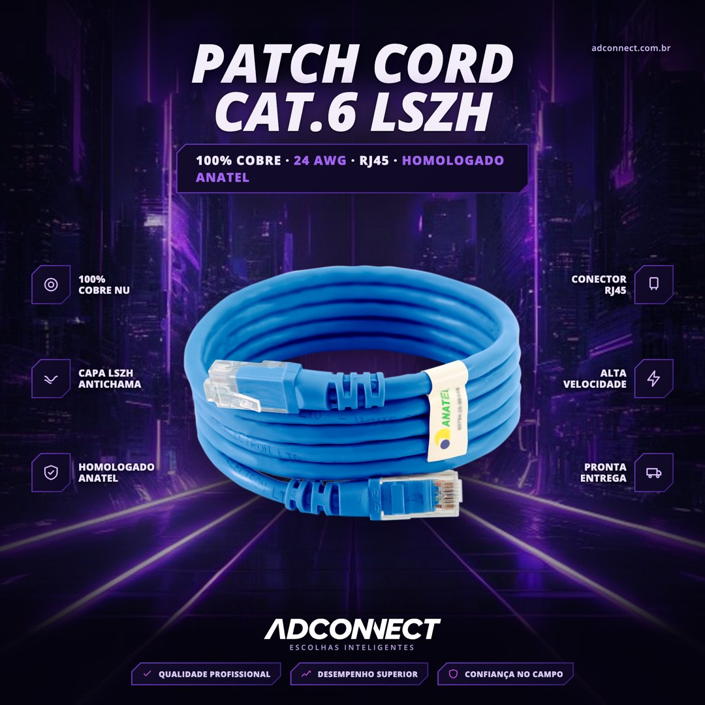

More than five years in B2B marketing. At Adconnect, a network infrastructure manufacturer, I run social content from calendar to copy to design, and I lead the person who manages the day-to-day. Below is a selection of real posts I wrote and designed, with the reasoning behind each. The audience is a technical trade audience, so the posts are in Portuguese.
Tools:
PhotoshopIllustratorCapCutClaude and Gemini for research and drafting
How I work
A repeatable rhythm, not one-off posts
I plan in two-week blocks of five posts a week, each tied to a content pillar, and I approve every piece before it ships. Nothing goes out without a check for audience fit, invented specs and sensitive data.
1. PlanEditorial calendar by pillar: authority and proof, technical education, product, programme.
2. WriteHook first, then caption, call to action and hashtags, always in the audience's own vocabulary.
3. DesignPosts, covers and carousels in Photoshop and Illustrator, video cuts in CapCut, one consistent brand system.
4. ReviewFit for the audience, no invented specs, no client data. I sign off on every post.
Selected posts
Six posts, six jobs to do
Each format has a different goal: build trust, teach, recruit, prove and sell. The captions explain the decision behind the design and the copy.

Authority: proof before the pitchCarousel cover for distributors. The number (14 years) leads and the headline carries the promise, so the slide earns the swipe before it asks for anything.Original headline (PT): "14 anos de canal. Presença nacional, entrega real."

Education: a post worth savingA technical guide that helps the audience specify the right product. The CTA asks for a save, not a click, because saves are how this audience reuses content in proposals.Original headline (PT): "CAT6 ou CAT6A: depende do projeto."

Program: benefit-led recruitmentTurns a loyalty programme into a reason to join the network. Headline speaks to margin, three ticks summarise the deal, one button closes it.Original headline (PT): "Distribuir ADCONNECT protege sua margem."

Proof: what backs the brandThree trust signals in one glance (certification, warranty, customer rating), built for a buyer who needs to justify the choice to someone else.Original headline (PT): "O que sustenta a sua revenda."

Second brand, own identityA green palette and a different tone of voice for DC World, a sister brand, so the two lines never blur together in the feed.Original headline (PT): "A rede não para. Seus ativos também não."

Product: pain firstOpens on the problem the buyer already knows (a bad patch cord takes the network down) and only then shows the product and its spec badge.Original headline (PT): "Patch cord ruim derruba a rede inteira."